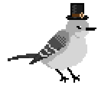

mockinbird.dev

Hollowgrounds- 2D ORPG
Powered by the Intersect Game Engine
Journey alone or with a group of adventurers in this exciting free-to-play retro-style Online Role-Playing Game. You will travel through different biomes, from the lush forests of the greenbelt to the arid deserts of the wastelands. You will meet new people and learn about their cultures. And you will discover the secrets of the ancient world, which will help you in your quest to stop the evil from rising.
Originally planned as an RPG Maker MV sequel to one of my (Nikki's) project I did for class, Cartuga, as Gralina but decided to bridge the trilogy together as an online game. The original source files for the game were lost because I forgot to make a backup before I did a reformat so the project died in 2019. The game was originally supposed to be another single player quick RPG with the last entry being the online one. But we decided to make this one online. Inspired by classics such as Deloria Online, Ragnarok Online, and Runescape (Among many more).
Created in-house by gameJeeNi, Episode 1: Gralina will be the retelling of the RPG Maker MV game that never was come to light. Episode 2 will mark the game's last update before we venture off into a new project possibly with the same Engine. While Episode 2 is on the pipeline, don't expect the game's life span to fall short.
Prologue, aka Open Beta, coming to a computer near you
Check out the DEV Log heregameJeeNi Team
-

Nikki "DJKNITEX" X
Main Developer
-
JeeJuz
GFX Artist / QA